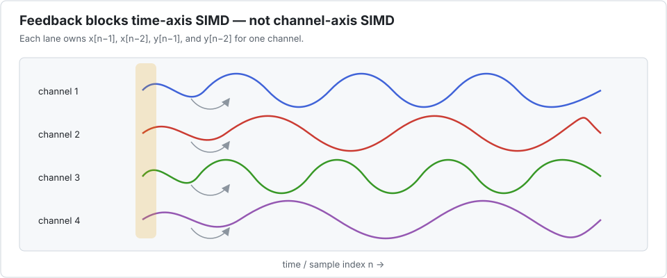

Tutorial 2 — A bank of feedback filters
An IIR biquad is a compact example of a temporal recurrence. Output sample n depends on earlier outputs, so SIMD across time is unsafe. Audio channels, sensors, simulation members, or parameter sets are often independent, however. They make a natural packed axis.

1. Write one filter
The kernel keeps four state values. When eltype(y) is a SIMD packet, every state variable becomes one packet too—one state per channel and no state sharing between lanes.
using Interleave
function biquad!(y, x, coeffs)
b0, b1, b2, a1, a2 = coeffs
z = zero(eltype(y))
x1 = z; x2 = z; y1 = z; y2 = z
@inbounds for n in eachindex(y)
x0 = x[n]
y0 = b0*x0 + b1*x1 + b2*x2 - a1*y1 - a2*y2
y[n] = y0
x2 = x1; x1 = x0
y2 = y1; y1 = y0
end
y
end
coeffs = Float32.((0.2, 0.4, 0.2, -0.3, 0.1))(0.2f0, 0.4f0, 0.2f0, -0.3f0, 0.1f0)Notice what is absent: the channel number. The driver owns the batch traversal; the kernel owns one causal signal.
2. Create distinct channels
Distinct inputs matter in tests. If every lane contains the same values, a lane permutation bug can remain invisible.
function signals(Arr, nchannels, nsamples)
x = Arr([(1f0 + Float32(channel) / 100) * cospi(Float32(n) / 32)
for channel in 1:nchannels, n in 1:nsamples])
y = Arr([0f0 for _channel in 1:nchannels, _n in 1:nsamples])
y, x
end
ys, xs = signals(Base.Array{Float32,2}, 61, 256)
yv, xv = signals(Interleave.Array{Float32,2,8}, 61, 256)
apply!((y, x) -> biquad!(y, x, coeffs), ys, xs)
apply!((y, x) -> biquad!(y, x, coeffs), yv, xv)
ys == yvtrue3. Recognize the application pattern
This layout works well for:
- many audio channels using the same filter structure;
- many sensors sampled on the same clock;
- an ensemble evaluated with different inputs or parameters;
- a cascade in which every lane executes the same number of stages.
It becomes less attractive when channels have different lengths, switch algorithms often, or require lane-dependent early exits. A SIMD packet progresses at the pace of its slowest lane.
4. State, coefficients, and parameters
Values stored in the arrays become lane-varying automatically. Plain scalar arguments are shared by all lanes. This distinction is useful:
- store a coefficient in a Interleave array when it differs by channel;
- pass it as a scalar or tuple when it is common to the entire batch;
- use
lanetype(eltype(y))to construct a scalar literal of the right precision.
For example, a normalized constant that works for scalar and packed elements is:
one_eighth(y) = lanetype(eltype(y))(0.125)
(one_eighth(packet(ys, 1)), one_eighth(packet(yv, 1)))(0.125f0, 0.125f0)5. What the speedup means
On the measured workload, the ordinary biquad reference delivered about 2.9 GFlop/s and the best sequential DLI configuration reached a 15.19× speedup. This is precisely the useful regime: the temporal dependency leaves SIMD units underused, while independent channels supply abundant lane-level work.
That result does not transfer automatically to a short buffer, a different coefficient form, or a different CPU. Measure setup and conversion costs as part of the real pipeline. The biquad application study reports the complete sequential and threaded packet-size sweeps and compares domain-specific alternatives.